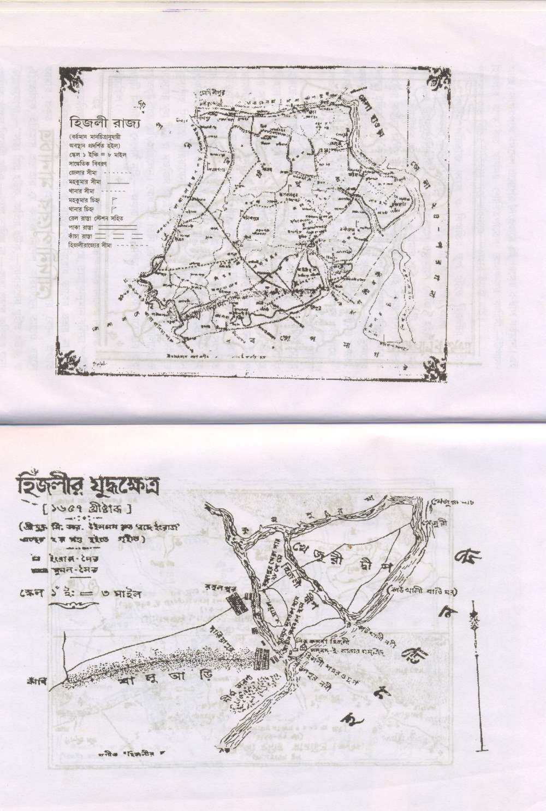
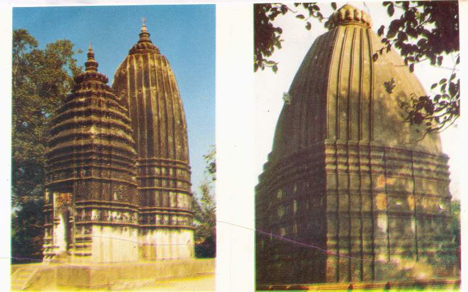

Rise and Fall of Places in Kanthi
Change is natural. In the past, the coastal contours of Kanthi changed frequently. The sea-level rose, islands emerged, and kingdoms fell. Here is the history of the lost glory of Hijli, Khejuri, and the great Zamindari estates.
1. Hijli – From the Sea to the Sea

The Pathan Dynasty & Taj Khan
After the fall of the Orissa kingdom in 1568, a Pathan youth named Ikhtiar Khan established a state with Hijli as its capital. Later, Taj Khan (Masnad-i-Ala) ruled from 1649 to 1651. He was known for his ascetic nature and inspired reverence in both Hindus and Muslims. His brother, Sikander Khan Pahalwan, was famous for his herculean strength.
The English Arrival
By 1587, Hijli was a bustling trade center. However, the Portuguese and "Maugs" (Arakanese pirates) ravaged the area. In 1687, Job Charnock captured the island for the British. Over time, cyclones and the receding sea destroyed the harbour. Today, only the Hijli Mosque (built in 1661) stands as a witness to the past glory.
2. Khejuri – The Lost Port
Khejuri rose from the sea in the 16th century. By the 18th century, it was a crucial anchorage for European ships that could not sail up the Hooghly to Kolkata. The first Telegraph Office in India was established here in 1851 to connect Khejuri to Kolkata.
However, devastating cyclones in 1864 destroyed the port. Today, the ruins of the Post Office and the Kaukhali (Cowcolly) Lighthouse (built in 1810) remain silent sentinels of history.
3. Bahiri – Wrapped in Mystery

Located 8km north of Contai, Bahiri is a cluster of villages (Paikbarh, Deulbarh, Dihi Bahiri) full of archaeological mysteries. Ancient brick wells and stone images suggest it was once a Buddhist center or a busy river port.
The Jagannath Temple
At Deulbarh stands a magnificent temple built in 1584 AD. Though the idols are gone, the 40ft high main temple and 35ft high Jagmohon still command admiration.
4. The Great Estates
Jalamutha Estate
Founded by Krishna Panda and expanded by Dibakar Chowdhury, this estate controlled 168 square miles including Jalamutha, Bahiri, and Birkul. The capital was at Garh Basudebpur. The dynasty saw many ups and downs, including the mysterious "death and return" of King Rudranarayan, reminiscent of the Bhawal Sanyasi case.
Sujamutha Estate
Centered around Kajlagarh, this estate was founded by the "Ranajhump" archers from Mayurbhanj. King Debendra Narayan was a patron of culture. The famous Kajlagarh Dighi (tank), where poet Dwijendralal Roy later stayed, was dug during Gopalendra Narayan's reign.
Panchet (Panchakote)
Founded by Murari Mohon Dasmahapatra, the capital Rajgarh still has remains of a palace with seven 'Mahals' and a mile-long moat. The kings introduced the famous Dole festival which is still observed by thousands of people.